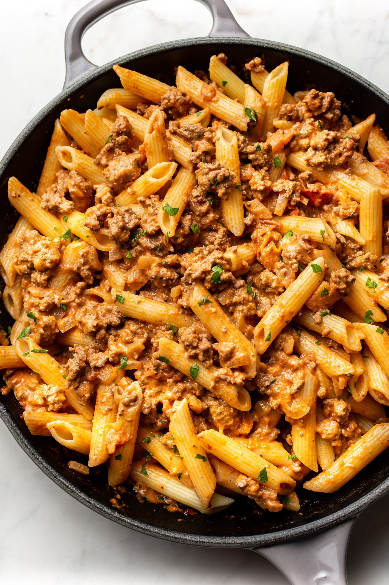

Pasta and Groundbeef

prep time
10 minutes
cook time
20 minutes
description
This ground beef pasta recipe tastes like it's been cooked low and slow, but it's ready in about 30 minutes! Perfect for busy weeknights.
ingirdients
- 8 ounces uncooked pasta
- 1 tablespoon olive oil
- 1/2 medium onion chopped
- 1 pound extra lean ground beef
- 3 cloves garlic minced
- 1 (14 fluid ounce) can diced tomatoes with juices
- 2 tablespoons tomato paste
- 1/2 teaspoon Dijon mustard
- 1/4 teaspoon Italian seasoning
- 3/4 cup heavy/whipping cream
- Salt & pepper
- Freshly grated parmesan cheese
step by step instructions
- Boil a salted pot of water for the pasta and cook it al dente according to package directions.
- Add the onion and olive oil to a large skillet (or small pot/Dutch oven) and cook for 4-5 minutes over medium-high heat.
- Add in the ground beef and garlic and continue cooking for another 8 minutes or so until the beef has browned (break the meat up with your spoon as you go along). Spoon out excess fat if there's a lot of it.
- Stir in the canned tomatoes, tomato paste, Dijon mustard, and Italian seasoning. Simmer for 4-5 minutes or until the sauce has reduced somewhat.
- Stir in the cream and cook for another 3-5 minutes (it'll warm through and reduce a bit).
- Season with salt & pepper as needed and toss with the drained pasta. Serve with parmesan cheese if desired.